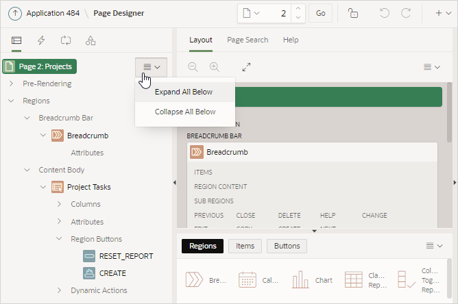
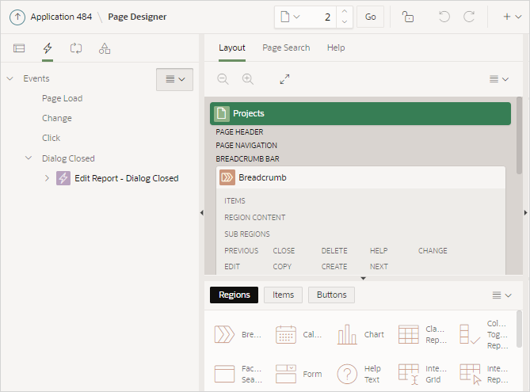
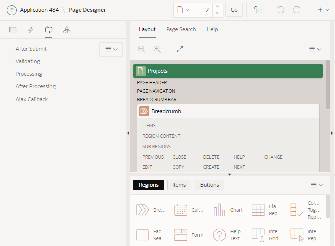
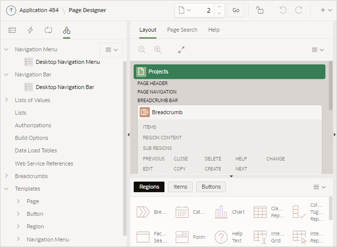

9.2.2 Left Pane of Page Designer
The left pane in Page Designer includes four tabs: Rendering, Dynamic Actions, Processing, and Page Shared Components. Each tab displays a list of the corresponding component types and components created on the current page.
Key features of the Left pane include:
-
Context menus. Right-click a component or control to display a context menu.
-
Quick Access to the Property Editor. Select a component or multiple components to display the corresponding attributes in the Property Editor in the right pane.
-
Drag and Drop. Drag components up and down within the tree to change the position or sequence of the selected component.
-
Tooltips. Position the mouse over a component or control to view a tooltip of basic information, such as the region type, item type, and so on.
Rendering Tab
The Rendering tab displays regions, page items, page button, page components, and application logic. The Rendering tab groups and orders components based on how Oracle Application Express processes them.
You can alter the display by selecting Expand All Below and Collapse All Below from the Rendering Menu.
Description of the illustration pg_rendering.png
Dynamic Actions Tab
The Dynamic Actions tab displays dynamic actions defined on the current page. By creating a dynamic action, you can define complex client-side behavior declaratively without the need for JavaScript.
Description of the illustration pg_dynamic_action.png
See Also:
Processing Tab
The Processing tab displays application logic defined on the page and groups and orders components based on how Oracle Application Express processes them.
Description of the illustration pg_processing.png
You can alter the display by selecting Expand All Below and Collapse All Below from the Rendering Menu.
Page Shared Components Tab
The Page Shared Components tab displays shared components associated with this page.
Description of the illustration pg_shared_components.png
See Also:
Parent topic: Understanding Page Designer UI Elements